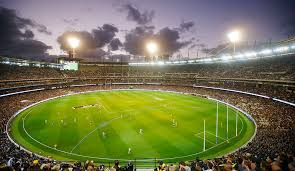
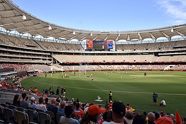

- Seating Capacity: 100,024
- Field Size: 171 m x 146 m

- Seating Capacity: 66,349
- Field Size: 150 m x 130 m

- Seating Capacity: 48,000
- Field Size: 167 m x 146.2 m

- Seating Capacity: 61,266,
- Field Size: 165 m , 130 m
- Seating Capacity: 61,266,
- Field Size: 165 m , 130 m